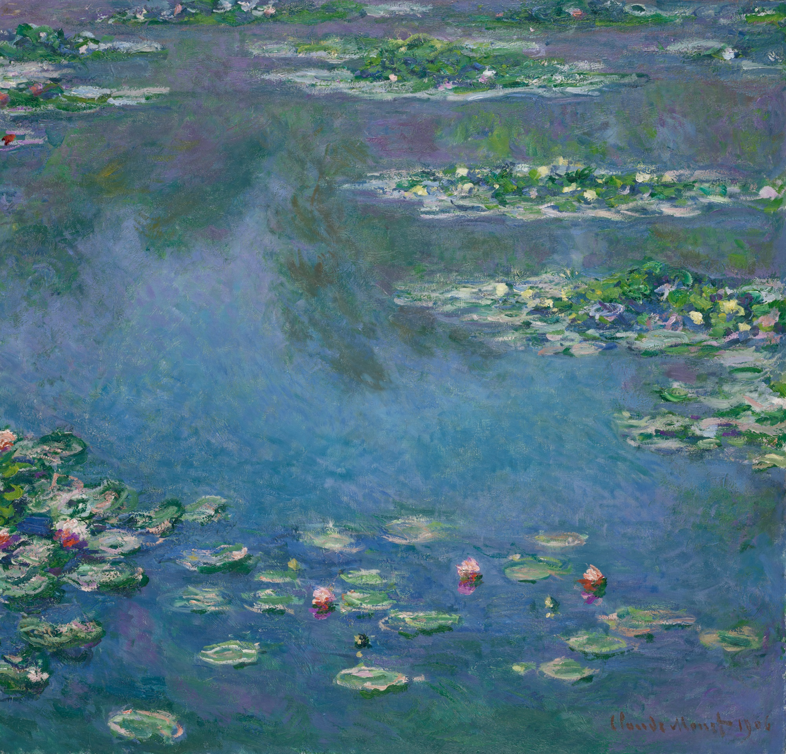
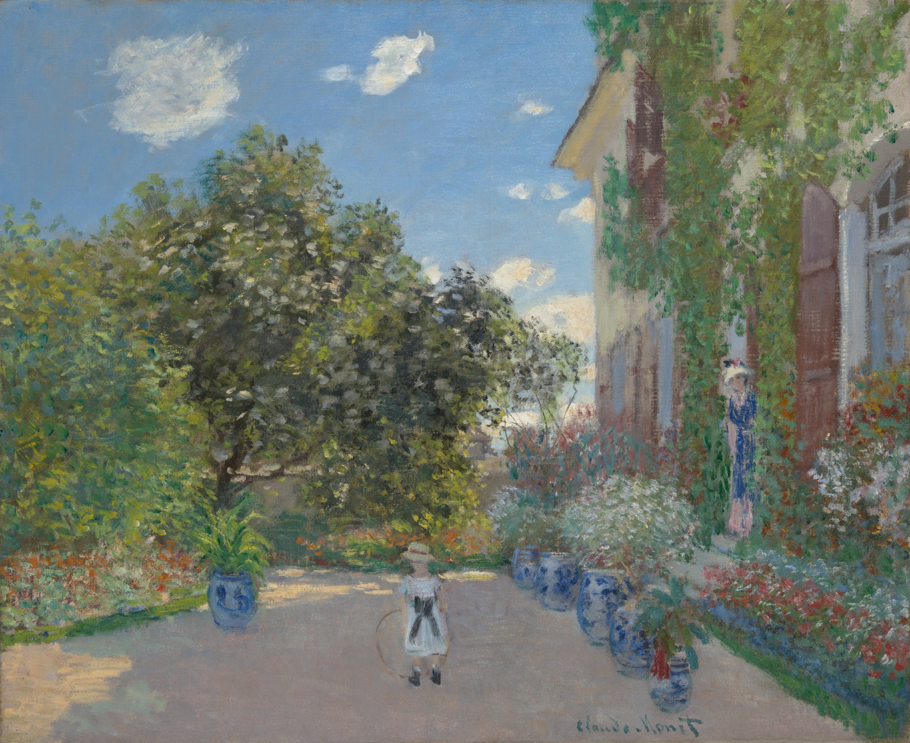
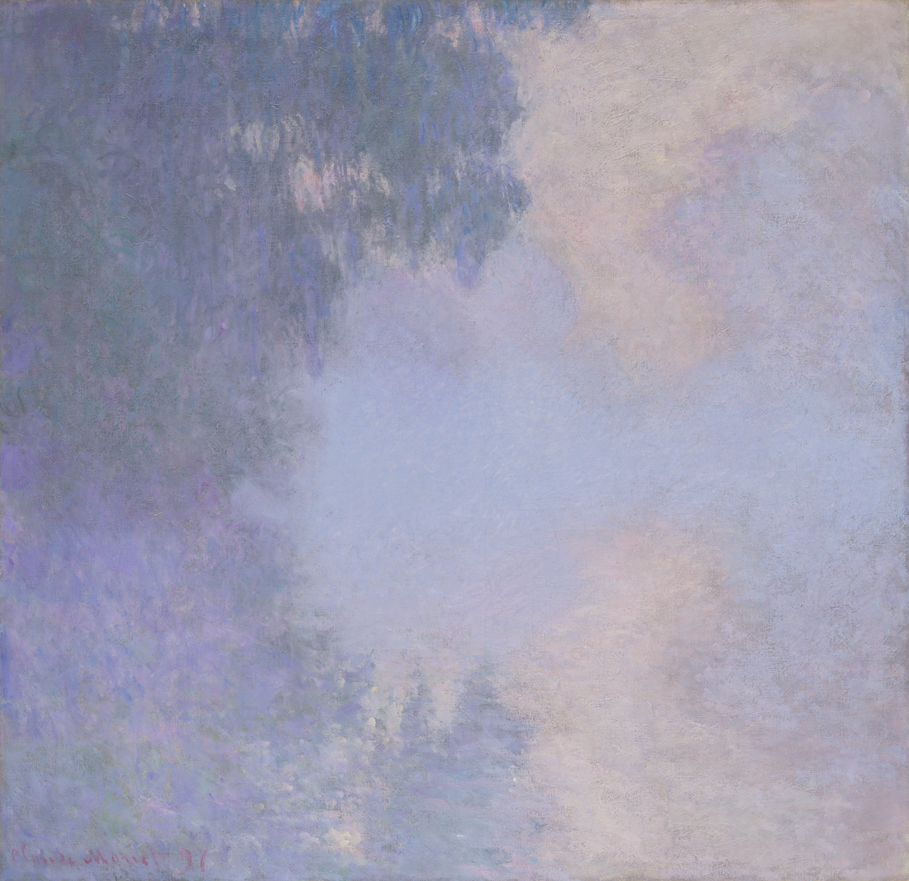
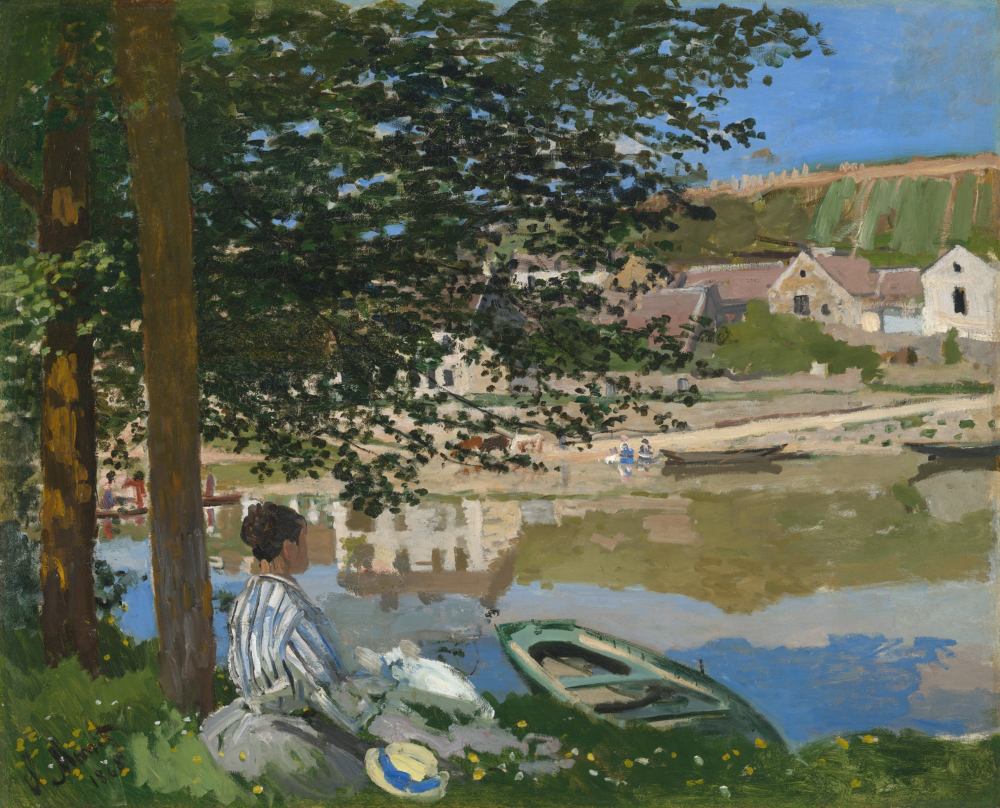

A living digital garden inspired by Monet's pond.Giverny, France · 1906—today
The Garden
in light
A quiet, interactive gallery where water, flowers and time move together.
Enter the garden
Some gardens are designed to be walked through. This one is designed to be felt: a brushstroke of blue, a flower held in the water, a little more day arriving with every scroll.
The Garden treats a painting as a place, not a picture. Move slowly. Let the colour settle.
Three views of one pond
Water lilies, a bridge, and the space between looking and seeing.
A place made of colour
The garden is a study in attention: a green made warmer by rose, a blue held still by shadow, a path that only appears once you stay.

— Claude Monet
Follow the colour, not the path. The pond will meet you there.
- Light
- ever-changing
- Water
- still, moving
- Season
- always in bloom
- Distance
- one slow scroll
Choose the hour
The same garden changes its voice as the day passes. Choose a light and watch the pond answer.

Stay until the picture begins to move. Return to the light.
The Garden is an independent digital artwork. Paintings by Claude Monet are held in the public domain; image files courtesy of the Art Institute of Chicago.